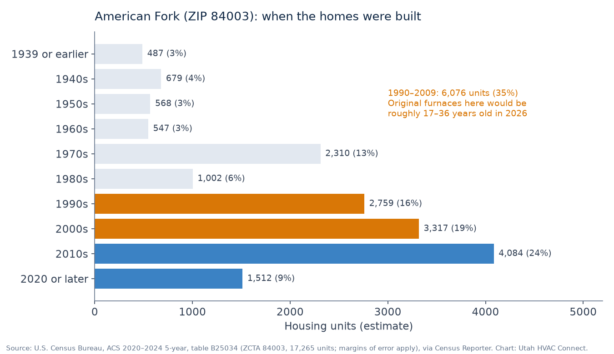

TL;DR
- In American Fork’s 84003, the median home was built in 2001, and about 6,100 housing units (35%) date from 1990 through 2009 (ACS 2020–2024). An original furnace in those homes is now roughly 17 to 36 years old.
- ENERGY STAR suggests considering replacement once a furnace is over 15 years old. DOE’s Building America Solution Center lists 18 years as the average gas furnace lifespan.
- Age starts the conversation; it doesn’t decide it. Safety (especially the heat exchanger), repair history, parts, and how long you’ll stay matter. ENERGY STAR’s checklist is below.
- Replacing in a home of this era often means new PVC venting and a condensate drain, and sometimes a chimney liner for the water heater. ThermWise lists $300–$350 for 95%+ AFUE furnaces.
- Free match request; licensed shops that serve 84003 may reach out. No prices here, and we don’t quote.
About a third of American Fork’s housing was built in the 1990s and 2000s (ACS). If the furnace in one of those homes is still original, it’s at the age where a breakdown turns into a bigger question: fix it again, or replace it? We can’t make that call for you, and neither can an age chart. A licensed shop that sees the furnace can. What we can do is give you the local numbers, what ENERGY STAR and DOE say about furnace age, and the questions that tend to matter in homes of this era.
Utah HVAC Connect is a matchmaker under Apex Lead Group, LLC. We connect American Fork homeowners with licensed Utah HVAC contractors. We don’t sell, install, diagnose, or quote, and this page has no prices.
How old American Fork’s homes are

In ZIP 84003, the median home was built in 2001, and 48% of the 17,265 housing units predate 2000 (ACS 2020–2024). About 6,100 units (35%) were built from 1990 through 2009: 2,759 in the 1990s and 3,317 in the 2000s (ACS table B25034). These are survey estimates with margins of error, so treat them as a picture of the area, not a count of your street.
| Home built | Housing units in 84003 | Share | Age of an original furnace in 2026 |
|---|---|---|---|
| 1980s | 1,002 | 6% | about 37–46 years (well past typical lifespans if still original) |
| 1990s | 2,759 | 16% | about 27–36 years |
| 2000s | 3,317 | 19% | about 17–26 years |
| 2010s | 4,084 | 24% | about 7–16 years |
Ages are simple arithmetic from the build decade, assuming the furnace is original. Some aren’t. If you don’t know your furnace’s age, ask the shop to confirm it from the unit’s labels.
What ENERGY STAR and DOE say about furnace age
- ENERGY STAR: it may be time to call a contractor about a change if “your furnace or boiler is more than 15 years old” (ENERGY STAR).
- DOE Building America Solution Center: residential HVAC equipment more than 15 years old “can be assumed to be near the end of its useful life,” and after that point “only minor, low-cost repairs are financially justifiable.” Its lifespan table, sourced to ASHRAE, lists 18 years for a gas or oil furnace (BASC).
- DOE’s Building America HVAC guide (written for contractors to share with homeowners) suggests weighing repair cost against replacement, and says that if repairs cost more than half the cost of replacement, replacing is the better investment (DOE Building America, Energy Renovations: HVAC).
- Furnace makers commonly describe a typical lifespan of about 15 to 20 years with maintenance (Carrier; American Standard).
By any of those yardsticks, an original 1990s or early-2000s furnace in American Fork is past the typical range. That makes replacement a fair question to ask. It doesn’t make it the answer.
ENERGY STAR’s repair-or-replace checklist
| Continue to repair if: | Time to replace if: |
|---|---|
| Under 15 years old (furnace or boiler) | Over 15 years old (furnace or boiler) |
| Good service record | Has had repeat problems |
| Major repairs made recently; only minor repair needed | Extensive or costly repairs needed |
| On/off cycling is not excessive | On/off cycling seems excessive |
| Performing up to expectations | Not performing up to expectations |
| Moving soon | Staying in the home for a long period |
Source: ENERGY STAR, “Repair or Replace? You Decide.”. ENERGY STAR says that if two or more items in the “replace” column apply, “it’s probably time to consider” a qualified replacement.
Questions to ask the shop about an original furnace
- What failed, and is the part still readily available for a furnace this old?
- Is there any safety concern, and can you show me? A cracked heat exchanger is the big one. Carrier lists it among the major repairs where repair-versus-replace comes up, and DOE’s Building America Solution Center says it often means the furnace should be replaced (Carrier; BASC). Carbon monoxide is colorless and odorless, so working CO alarms matter with any gas furnace (EPA).
- What’s the repair history? Repeat problems are on ENERGY STAR’s “replace” side.
- Written numbers for both paths, so you can apply DOE’s half-the-cost rule of thumb yourself.
- How old is the AC? If it went in with the furnace, it’s the same age. ENERGY STAR flags ACs and heat pumps older than 10 years (ENERGY STAR). If both are due, see AC and heat pump options, including dual fuel.
If you replace: what changes in a 1990s–2001 home
- Venting. Non-condensing furnaces (up to about 80% AFUE) usually vent through a metal flue (NREL ResStock documentation for DOE). If that’s what you have, moving to a 90%-plus condensing furnace means PVC intake and exhaust piping run to the outdoors and a condensate drain, and the vent termination has to meet code and the manufacturer’s requirements (BASC). Ask how and where the new pipes will run.
- The water heater. If the old furnace shared a chimney or vent with a natural-draft water heater, that chimney may need a liner once the furnace is removed from it, to meet the fuel-gas venting rules in the building code. Even a new 80% furnace may need one in some cases (BASC). Ask whether the bid covers it.
- Condensate in winter. Condensate can freeze where it drains outdoors or through cold spaces, so ask where the drain will go (BASC). Our cold-air guide explains why that matters on cold Utah nights.
- Rebates. Enbridge Gas ThermWise listed $300 for a 95%–97.4% AFUE gas furnace and $350 for 97.5% AFUE or higher with an ECM on October 12, 2026 (ThermWise). The federal 25C credit isn’t allowed for equipment placed in service after December 31, 2025 (IRS).
- Permit. American Fork’s Building Department handles permits. Ask whether the permit is in the bid.
- License. Check any shop on DOPL’s free Licensee Lookup & Verification: you want an Active status and an HVAC classification (H100, or the older S350).
What moves a replacement bid up or down (sizing, efficiency, venting, ductwork, haul-away) is covered in our furnace replacement guide. We don’t publish prices.
Heat out right now? Start with no-heat help and pick “Today” on the form.
How matching works
- Tell us what you need on the free Get Help form: service type (choose Replace, or “I’m not sure” if you’re still weighing repair), urgency (Today, This week, or Planning), your ZIP, and when it’s reasonable to reach you.
- We match licensed Utah shops that serve your ZIP. We don’t dispatch technicians, diagnose, or write proposals.
- Matched pros may reach out using the contact details you provide. You talk with them, compare, and hire who you want, or no one. No homeowner fee and no obligation. More: how it works and how we make money.
Related guides
- Furnace replacement in Utah: what drives a bid, rebates, permits, and the DOPL license check
- Furnace and AC help in American Fork (84003): local housing data and permits
- Provo & Orem: about half of homes there were built from 1970 to 1999
- Why is my furnace blowing cold air?
- AC and heat pump replacement: if the AC is the same age
- Replacing the furnace in a 1970s–80s east Sandy home: if your furnace has already been replaced once
How we put this page together
This page was written by the Utah HVAC Connect editorial team, not by a contractor. We used public data only: NOAA 1991–2020 climate normals, U.S. Census Bureau American Community Survey (ACS) estimates, and the rebate, permit, and licensing pages published by Utah utilities, cities, and DOPL, each checked on the date shown above. For this article we pulled ZIP-level year-built data from the Census Bureau and read ENERGY STAR, DOE, and manufacturer guidance on furnace age and replacement. We don’t publish prices we can’t source, contractors can’t pay to be mentioned here, and we don’t name partner shops on this page. Programs and rules change, so confirm details with the program or your contractor before you sign anything. See our editorial policy. Spot an error? Email hello@utahhvacconnect.com.
Sources
- U.S. Census Bureau, ACS 2020–2024 5-year, tables B25034, B25035, B25003, ZCTA 84003, via Census Reporter API
- Census Reporter profile, ZCTA 84003
- ENERGY STAR, When is it time to replace?
- ENERGY STAR, Repair or Replace? You Decide. (PDF)
- U.S. DOE Building America Solution Center (PNNL), Pre-retrofit assessment of existing HVAC systems
- U.S. DOE, Building America Best Practices Series Vol. 14, Energy Renovations: HVAC (PNNL/ORNL, 2011)
- NREL for U.S. DOE, ResStock measure documentation: natural gas furnace 95% AFUE (OSTI)
- Carrier, Furnace troubleshooting guide (repair or replace)
- American Standard, when to replace a furnace
- U.S. EPA, What is carbon monoxide?
- Enbridge Gas, ThermWise appliance rebates
- IRS, FAQs on 25C under Public Law 119-21
- American Fork City, Building Department
- Utah DOPL, Licensee Lookup & Verification
Questions about the service: hello@utahhvacconnect.com.
FAQ
Should I replace the original furnace in my 1990s American Fork home?
We can’t make that call; a licensed shop that sees the furnace can. ENERGY STAR suggests considering replacement for furnaces over 15 years old, and DOE’s Building America Solution Center says equipment past 15 years is near the end of its useful life. An original 1990s furnace is well past that, so it’s a fair question to raise.
How long does a gas furnace last?
DOE’s Building America Solution Center lists 18 years for a gas or oil furnace (from ASHRAE data), and furnace makers commonly describe about 15 to 20 years with maintenance. Condition, safety, and repair history matter as much as age.
When is a furnace repair not worth it?
DOE’s Building America HVAC guide says that if repairs cost more than half the cost of replacement, replacing is the better investment. ENERGY STAR’s checklist adds repeat problems, excessive cycling, poor performance, and age over 15 years as signs to consider replacement.
What changes when I upgrade an 80% furnace to a high-efficiency one?
A 90%-plus condensing furnace needs PVC intake and exhaust piping to the outdoors and a condensate drain. If the old furnace shared a chimney with a natural-draft water heater, that chimney may need a liner. Ask whether the bid covers venting, the drain, and any liner.
Are there rebates for a new furnace in American Fork?
Enbridge Gas ThermWise listed $300 for a 95%–97.4% AFUE gas furnace and $350 for 97.5% AFUE or higher with an ECM on October 12, 2026. The federal 25C credit ended for equipment placed in service after December 31, 2025.
Do you give furnace replacement prices?
No. We don’t publish or quote prices. Licensed shops that serve your ZIP may reach out after you send a free request, and they discuss options and pricing with you. What moves a bid up or down is in our furnace replacement guide.